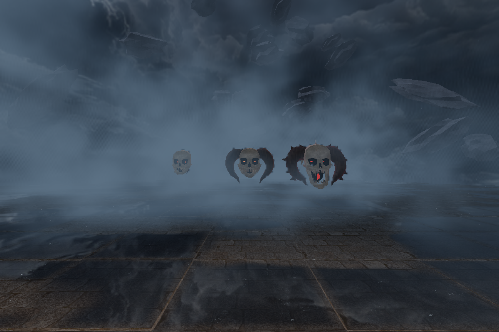

Skulls I–III
Newly authored anatomy inspired by the retained Devil Daggers references. Deep orbital cavities, compact biting bone and descending horn silhouettes replace the previous screaming skull, iron helmet and split mask.
In motion
The film shows the new geometry in studio and arena views. The instance-motion fixture exercises the production flight controller with controlled trajectories.
Original reference / previous model / new model
Each model is fitted to its own frame; these images compare shape, not size. Original component assemblies use imported local coordinates, with approximate articulation. Clay shading makes their anatomy easier to inspect.
Skull 1
Skull 2
Skull 3
Actual arena renderer

Matched camera distance: 5 units / 12 units / 30 units.
Dense swarm

Renderer checks and geometry counts · Implementation and verification notes